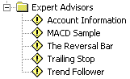

Советники
(Expert Advisors)
Советники (Expert Advisors)
используются для автоматизации торгового процесса, позволяя разгрузить
трейдера от рутины постоянного наблюдения за рынком. Многие
профессиональные трейдеры имеют массу торговых систем, позволяющих им
работать на различных рынках и условиях. Обычно они пишут и тестируют свои
торговые стратегии в таких известных аналитических пакетах как MetaStock
или TradeStation.
Expert Advisors в MetaTrader позволяют связать
сигналы, генерируемые торговыми системами со своим реальным счетом таким
образом, чтобы прямо из экспертной системы знать и управлять в любой
момент своими открытыми позициями, выставленными ордерами и
стопами.

Более подробная информация по экспертам
находится на сайте разработчика.
Назад Содержание Далее
|